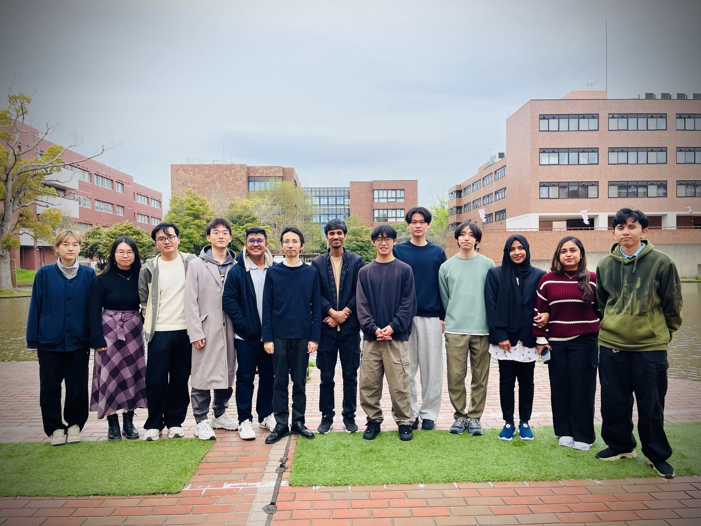

Turning Academic Dreams into Reality
Presented by Rashedul Arefin Ifty
MEXT Scholar | M.Sc. Computer Science, University of Tsukuba
MEXT Scholar University of Tsukuba, Japan
Education
M.Sc. in Computer Science
University of Tsukuba, Japan
MEXT Scholarship · 2026–2028
B.Sc. in Computer Science & Engineering
International Islamic University Chittagong
CGPA 3.86 / 4.00 · Top 2%
Experience
Graduate Researcher
Lab. for System Dependability, Univ. of Tsukuba
Associate AI Engineer
Liberate Labs
Adjunct Lecturer
Dept. of CSE, IIUC

Dependable AI System Laboratory
University of Tsukuba
World-Class Education
Top-performing OECD nation in science and math, with globally ranked universities and cutting-edge research.
Research Powerhouse
The world's 3rd-largest R&D spender, leading robotics, AI, materials, and engineering.
Affordable and Funded
Low tuition versus the West, plus generous scholarships like MEXT: full tuition, stipend, and airfare.
English-Taught Degrees
700+ full degree programs taught in English. No Japanese required to begin your studies.
Safe and High Quality of Life
One of the safest countries on Earth, with excellent healthcare, transport, and living standards.
Strong Career Pathways
Labour shortages in tech and engineering, plus simplified post-study work visas for graduates.
408,000+ international students chose Japan in 2025, a record high.
Without a Scholarship
Scholarships Provide
| Tuition Fee | Monthly Stipend | |
|---|---|---|
| MEXT (Monbukagakusho) | Yes, plus all fees | 96,000 BDT – 1,19,000 BDT |
| JASSO Honors | Variable | 39,000 BDT |
| Local Govt. / Int. Assoc. | Yes | 8,000 BDT – 50,000 BDT |
| Private Foundations | Yes / variable | 95,000 BDT – 1,31,000 BDT |
Figures reflect 2026 rates, approx. 1 JPY = 0.82 BDT. Amounts vary by city and program.
Embassy Recommendation
Apply through your local Japanese Embassy
University Recommendation
Apply directly to a Japanese University
Both offer the same full funding. We will walk through each track next.
Apply
Embassy of Japan, Dhaka
Document Screening
Shortlist
Written Exam
English + Subject
Interview
At the Embassy
Placement
MEXT Tokyo
Fly to Japan
Spring Intake
~70
Awardees / Year
0 BDT
Application Fee
No
Admission Letter Needed
~1 Yr
Apply to Arrival
Primary Intake
April
Spring Cohort
Special university-recommended programs admit here, including my own.
Scholarship Intake
October
Fall Cohort
Most MEXT Embassy and University-recommended awards start here.
Apply about one year ahead of your intended intake.
Prepare your IELTS and documents early. Class starts the April or October cohort.
Email Professor
With a research plan
Professor Interview
Initial selection
University Exam
Entrance & selection
Recommendation
To MEXT government
MEXT Selection
Scholarship award
Arrive in Japan
Apr or Oct intake
Professor
Starts with Contact
No
Embassy Exam
Guaranteed
University Placement
Limited
Quota per University
University track skips the embassy exam. It begins with your professor.
Some programs admit university-track students in the April cohort, such as mine.
Eligibility Criteria
Required Documents
Exact requirements vary by track and university. Always confirm with the official guidelines.
Choosing the Right Lab
Emailing the Professor
A tailored email that shows genuine research fit puts you in the top 5% professors receive.
The Research Plan is King
It is the single most important document. Invest the most time here.
Be Specific, Not Generic
Name the exact question, method, and data. Vague topics get rejected.
Align Three Things
Your background, the professor's lab, and Japan's research strengths.
Show Value to Japan
Explain how your work benefits Japan's priorities and society.
Write Clearly
Embassy staff read it first, not experts. Avoid heavy jargon.
Start Early, Get Feedback
Have a MEXT scholar or professor review it before you submit.
One hour of expert feedback can be the difference between rejection and a flight to Japan.
Pillar One
Time is Everything
Every second counts. Hit every deadline and meet the academic standard expected of a scholarship student, without exception.
Pillar Two
Stay Close to Your Supervisor
Keep your professor updated at every phase of your research. Report, communicate, and consult. This is the heart of lab culture.
| Housing (dorm / share) | ¥38,000 – 40,000 |
| Food & Daily Life | ¥30,000 |
| Transportation | ¥8,000 |
| Health Insurance | ¥3,000 |
| Mobile & Misc. | ¥14,000 |
Work Part-Time
28 hrs / week
A bare-minimum job earns about ¥30,000 – 60,000 extra each month. More hours pay more, but study and research come first.
Learn Japanese Use your prep time well. Basic conversation makes daily life far easier.
Easier Jobs Conversational Japanese unlocks most part-time work.
Culture Festivals, travel, food, and lifelong friendships await.
Outside campus, English is rare. A little Japanese goes a long way.
Your Journey Awaits
From cherry blossoms in spring to snowfall in winter,
and Mount Fuji standing timeless through it all,
Japan is where your academic dream becomes a life worth living.
Thank You
Rashedul Arefin Ifty · MEXT Scholar, University of Tsukuba